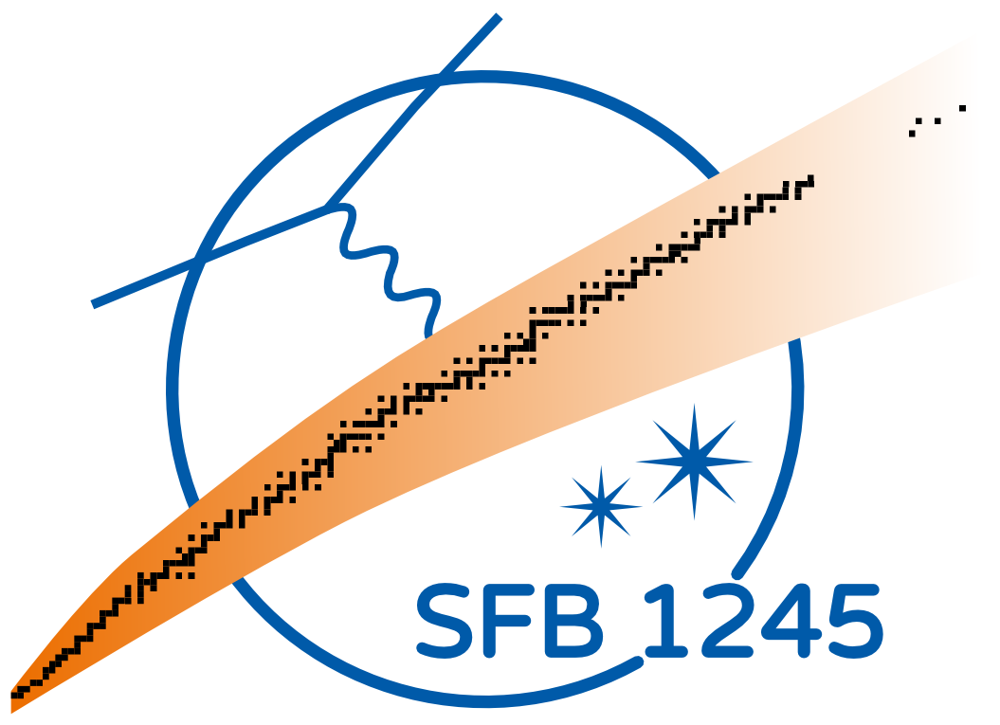

Long-time Core-Collapse
Supernova Simulations
Doctoral Defence of Carlos Mattes, October 15$^{\mathrm{th}}$, 2018
Referees
A. Arcones
S. Couch
Examiners
T. Aumann
B. Drossel

- 
Motivation
are relevant for nucleosynthesis
- Fe-group production
- key isotopes ${}^{26}\mathrm{Al}$, ${}^{44}\mathrm{Ti}$, ${}^{56}\mathrm{Ni}$
- different nucleosynthesis processes
- mixing and distribution of elements in SN remnants
CCSN in a Nutshell

progenitor
- $M_{\mathrm{ZAMS}} \gtrsim 10 \;M_\odot$
- degenerate iron core
core-collapse
- $R_{\mathrm{core}} \approx 1000\; \mathrm{km} \to 10\; \mathrm{km} \approx R_{\mathrm{PNS}}$
- $E_{\mathrm{grav}} \approx 10^{53} \mathrm{erg}$
shock formation
- nuclear repulsion $\rho \gtrsim 10^{14} \;\mathrm{g\;cm}^{-3}$
- $q_{\mathrm{nuc}}(\mathrm{Fe} \to p,n) \approx 10^{52} \mathrm{erg}\;M_\odot^{-1}$
- $L_{\nu} \approx 10^{52} \; \mathrm{erg}\;\mathrm{s}^{-1}$
- accretion shock
shock revival
$P_{\mathrm{shock}}$ vs $P_{\mathrm{ram}}$
delayed neutrino energy
deposition Bethe & Wilson 1985
$\nu_e + n \to e^- + p $
$\bar\nu_e + p \to e^+ + n$
competing timescales
$t_{\mathrm{dwell}} \sim M_{\mathrm{g}}/\dot{M}$
$t_{\mathrm{heat}} \sim E_{\mathrm{g}}/Q_{\mathrm{g}}$
Physical Model
conservation equations
solver
- hydrodynamics code FLASH Fryxell et al. 2000, Dubey et al. 2009
- CCSN setup Couch, O'Connor, Pan 2013-2018
- progenitor e.g., Woosley & Heger 2007
- equation of state e.g., Lattimer & Swesty 1991
- neutrino transport e.g., ASL, Perego et al 2016
axis-symmetric (2D) simulation, FLASH-ASL
Neutrino Transport Comparison
| scheme | optially thick | optically thin |
|---|---|---|
| ASL Perego et al. 2016 PhD Thesis |
production vs diffusion timescales |
stationary on rays |
| IDSA Liebendörfer et al. 2009 Pan et al. 2016 |
isotropic diffusion | stationary on spherical averages |
| M1 e.g., Shibata & Taniguchi 2011 O'Connor & Couch 2018 |
isotropic M2 flux correction |
forward peaked M2 |
controlled: same hydrodynamics solver

- different accretion luminosities
- similar mean energies
- ASL has an initial heating deficit
- M1 has less convection in the center
Pan, Mattes, O'Connor, Perego, Couch, Arcones (JPhysG, submitted)
Long-time Simulation in 2D
simulation setup
- newtonian gravity
- extended domain
- artifical heating factor
$q_\nu = \mathcal{C} + f_{\mathrm{heat}} \mathcal{H}$
Summary after
one second
- ejecta cool fast
- extreme $Y_e$ values
- ejecta Morphologies
- bi-polar
- mono-polar
- all directions
long-time situation
- long lasting downflows
- heavy PNS
- growing diagnostic energy
- no correlations
with $f_{\mathbf{heat}}$ - unstable center
- extreme $Y_e$
biased nucleosynthesis
Summary
- Implementation of ASL in FLASH
- First controlled neutrino transport comparison
- Long-time CCSN Application:
Late downflows lead to heavy neutron stars
(progenitor/2D artifact)